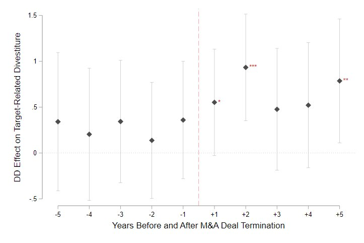
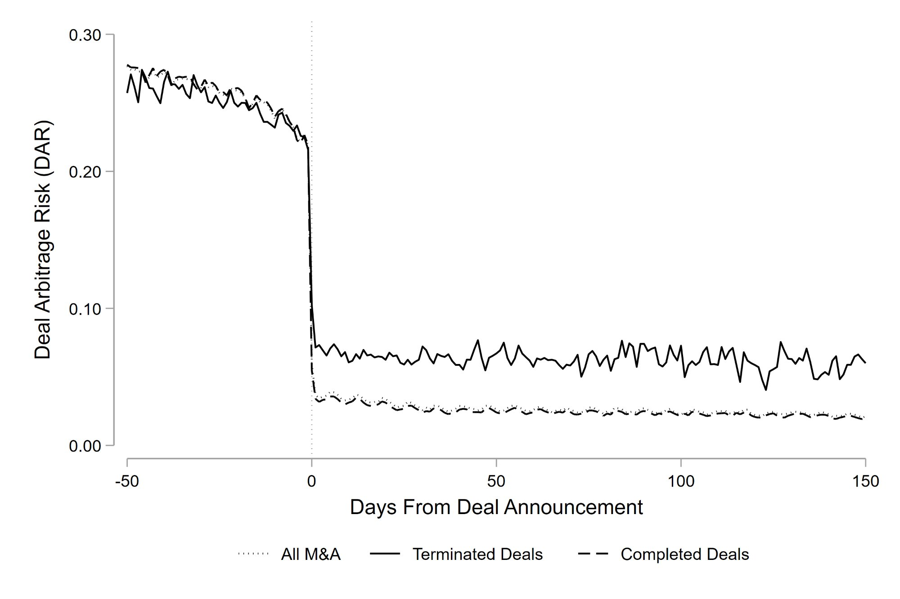

My research asks a simple question: when major corporate events disrupt firms, what happens to the people? Mergers and acquisitions, deal terminations, and corporate bankruptcies reshape not only firm strategy but also how organizations hire, redeploy talent, and — in some cases — push individuals toward entrepreneurship. I study these dynamics and their consequences for both firms and careers.
Originally from South Korea, I received my Ph.D. in Management (Strategy Area) from Purdue University, M.Sc. in Business and Technology Management from KAIST, and B.Econ. from Sungkyunkwan University. Prior to academia, I worked at Samsung Electronics and PwC.

